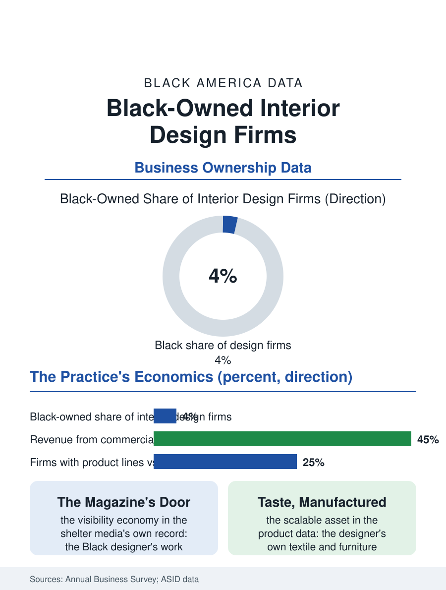

Black Business
Whose Rooms: Black-Owned Interior Design Firms
Four percent of the firms arranging America's rooms, correcting the shelter magazine's pages and building product lines past the showroom gate. The interiors file.

Interior design is the profession that arranges other people's rooms for a living, and its Black practitioners, a small single-digit share of the industry's licensed and association-registered designers, work a market whose commanding heights, the corporate and hospitality contracts and the shelter magazine's pages, have their own composition history. The business census counts the firms within the specialized design services. This article reads the interiors file.
The Room's Gatekeepers
The firm's market divides into the residential tier, the private client's home, allocated by the referral networks of the affluent, and the commercial tier, the offices, hotels, and health care facilities whose design contracts run through the procurement systems of the business section's other files, with the Black firm's historical position in the residential tier of its own community's professional class and, in the commercial tier, at the certification programs' door. The shelter media, the design magazines and the show houses, compose the profession's visibility economy, and their pages' composition across the decades is the cultural file's version of the masthead data: the Black designer's work featured at a fraction of the profession's own share until the current era's deliberate correction, the special issues and the lists, whose arrival the practitioners receive with the ambivalence due a door opened by the doorman's embarrassment. The product file adjoins: the designer's own lines, the textiles and furniture and objects whose licensing and manufacture convert the practice's taste into the scalable asset, a tier where the current era's Black designers have built notable brands on the direct channel the platforms supply, bypassing the showroom system's gate as the other creative files' founders did. The staging and model-home tier deserves its line as the firm's quiet volume business: the builders' model units and the sellers' staged listings are design delivered on the production schedule, and the firms that win the builders' repeat contracts hold the closest thing the residential market offers to an annuity, a niche whose gate is the builders' vendor list and whose economics reward the firm that treats the deadline as the design's first material.
Clients, Capital, and the Sample Library
The practice's economics are the professional service's: the design fee and the product markup, the latter the industry's traditional and contested engine, the designer purchasing at the trade discount the showrooms extend and billing at the retail the client pays, a spread whose transparency the current client generation negotiates harder, compressing the model toward the fee-for-service the younger firms advertise. The firm's capital is the sample library and the vendor accounts, the fabric houses' and the furniture makers' trade terms being extended on the credit and relationship terms the business files describe, so that the young Black firm's showroom access is itself a negotiated frontier the trade associations' mentorship programs now work deliberately. The hospitality and health care design tiers are the file's growth map: the hotel brands' renovation cycles and the health systems' facility programs write design contracts at scales the residential tier cannot, allocated through the supplier diversity channels whose design category is among their least developed, a gap the firms' associations have made their advocacy's specific target.
Whose Rooms, Whose Taste
The interiors file closes on the profession's cultural substance: the designer decides how a people's domestic and public rooms look and feel, and the Black tradition in the field, from the Victorian era's upholsterers and decorators of the community's grand homes through the modernist generation the record nearly lost, is a design history the profession's own scholarship is now recovering, its archive the photograph albums of the rooms themselves. The contemporary firm's opportunity is the demographic's: the Black professional class's housing, the wealth file's growing tier, is a clientele the general profession underserves with a fluency it cannot stock, and the firms serving it with the tradition's own vocabulary, the art and the textiles and the family photograph given the room's place of honor by design rather than by default, are building the practices the file watches. The census counts the design firms in the thousands across the category, the Black-owned a thin and rising line. The file's last entry is the finished room's photograph, the designer's portfolio and the family's album in a single image, in which the century's argument about whose taste furnishes the American interior is answered, one commissioned room at a time, by the hands the sample library finally admitted.
More in Black Business
Black-Owned Businesses: Counts, Receipts, and the Representation Gap
About 161,000 Black-owned employer firms and three million solo ventures: how the Census Bureau counts Black business ownership, where firms concentrate, and the gap between population share and business share.
Black Median Net Worth: The Wealth Gap in Federal Reserve Data
The Federal Reserve puts Black median family net worth at $44,900, against $285,000 for White families — about 16 cents on the dollar. The widest gap in economic data.
Black Buying Power: The $1.8 Trillion Consumer Economy
Black buying power is estimated at about $1.8 trillion — larger than the economy of most nations. What the figure measures, who produces it, and what it buys.
Source: U.S. Census Bureau, Annual Business Survey for specialized design services; American Society of Interior Designers industry data.